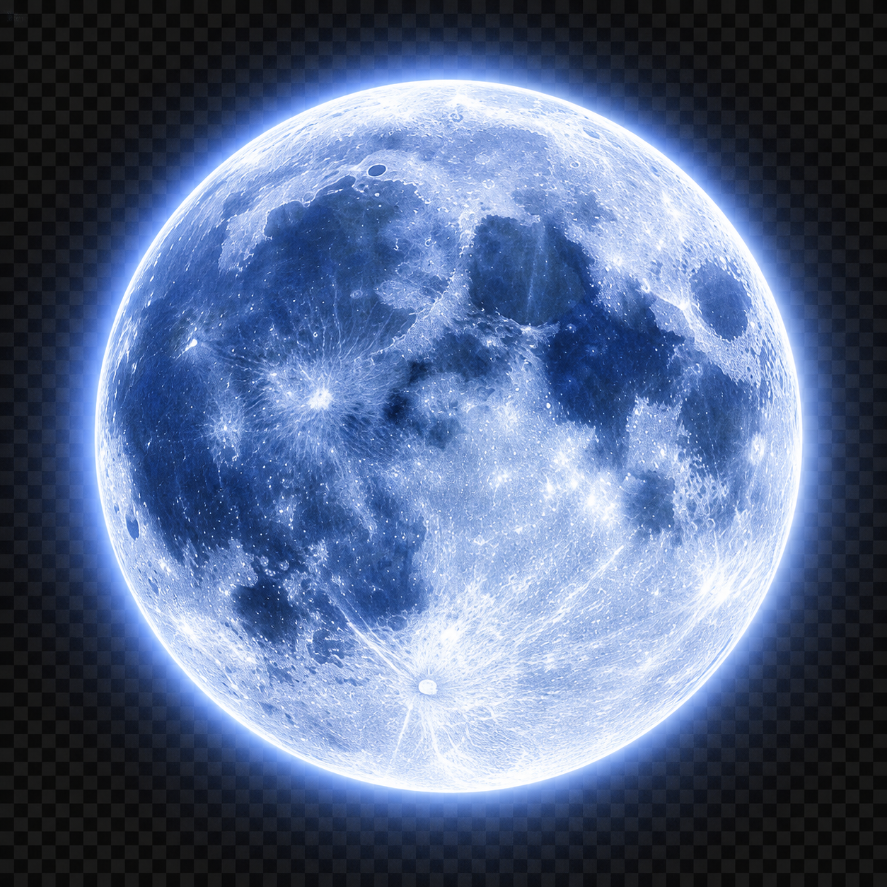

3 Oro · 3 Plata · 1 Bronce
✦ BIENVENIDO A MI MUNDO ✦
LUIS ALEXANDER YUGSI PARRA
✦ ESTUDIANTE DEPORTISTA DISCIPLINADO
Nací el 24 de abril del 2006 en el cantón El Chaco. Desde los 9 años entreno atletismo, una disciplina que me enseñó constancia, esfuerzo y a no rendirme. A los 14 años, motivado por mi hermano, empecé a entrenar fútbol; desde entonces se convirtió en otra de mis grandes pasiones y hasta hoy disfruto jugarlo. Actualmente estudio en la Universidad Técnica de Cotopaxi, formando mi camino como desarrollador web.
⌄DESLIZA PARA EXPLORAR

未
来
を
信
じ
て
⟲
来
を
信
じ
て
⟲
Entrenando atletismo
Universidad Técnica de Cotopaxi
Apasionado por la programación
✦ RUTA DE ENTRENAMIENTO
UNIDADES DE APRENDIZAJE
✦ GALERÍA SHINOBI
ENERGÍA EN MOVIMIENTO
Momentos, símbolos y energía que definen mi camino.
✦ REGISTRO DE MISIONES
LOGROS DESBLOQUEADOS
♕
LOGRO 01
ESPÍRITU COMPETITIVO
Siete medallas obtenidas representando a mi cantón.
920 / 1000 XP
ϟ
LOGRO 02
VELOCIDAD SHINOBI
Más de diez años de disciplina y atletismo.
840 / 1000 XP
</>
LOGRO 03
CAMINO DEL CÓDIGO
Construyendo habilidades como desarrollador web.
680 / 1000 XP
✦ TRANSMISIÓN ABIERTA
¿LISTO PARA UNA
NUEVA MISIÓN?
Conversemos sobre tecnología, deporte o nuevos proyectos.
WhatsApp: 093 916 4290